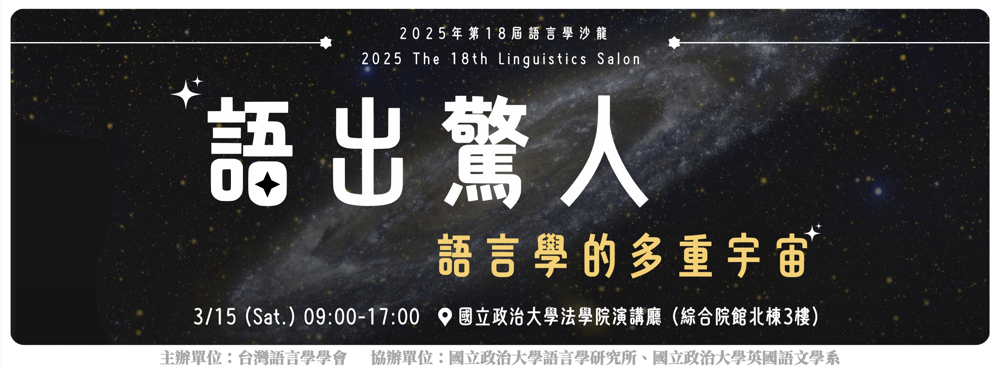
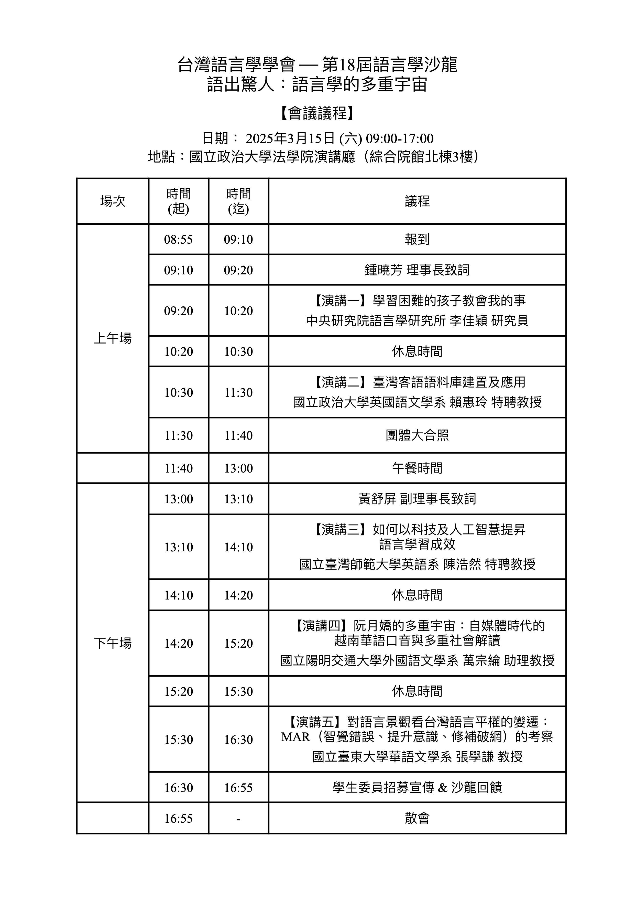
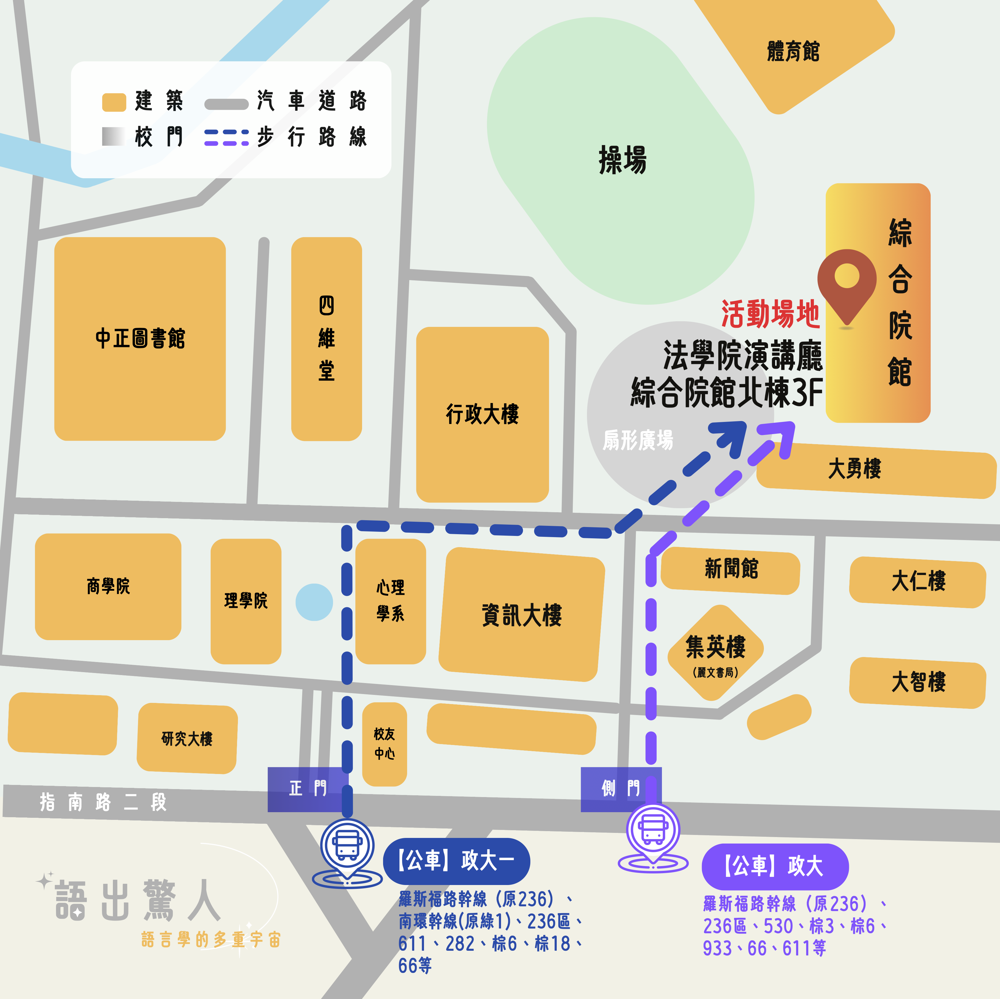

第18屆語言學沙龍 - The 18th Linguistic Salon
語出驚人：語言學的多重宇宙
2025年03月15日 (六) 09:00-17:00
📍 國立政治大學 法學院演講廳 綜合院館北棟3樓
# 關於語言學沙龍
沙龍語言學沙龍是台灣語言學學會學生事務委員會的年度活動，自2007年以來已舉辦十七屆，一直致力於促進語言學領域的學術交流。每一屆我們都邀請多位專家學者，透過深入淺出的方式分享語言學議題，讓更多人了解語言的奧妙與相關專業知識，並促進語言學在日常生活與學習中的應用。
歷屆沙龍資訊，請參考 這裡。
# 本屆議題焦點
語言學沙龍作為學界與社會大眾交流的重要平台，過去探討了語言學習的創新、社會文化的互動，以及科技發展帶來的新契機，見證語言研究的多元發展。
2025年第18屆語言學沙龍以『語出驚人：語言學的多重宇宙』為題，內容涵蓋人工智慧、文化保存、社會平權、認知科學等領域，展現出令人意想不到的研究面向。每個研究領域都是一個獨特的宇宙，有其專屬的視角與方法，而語言研究則在這些宇宙間穿梭、對話，激發出新的思維與發現。本屆五場講座就像是跨越不同宇宙的探索之旅：從AI科技為語言教育開創的新天地、數位技術為客語文化構築的保存空間、語言權利在社會變遷中開拓的視野，到探索大腦中的語言運作奧秘，以及觀察社群媒體時代下語言與身份的多重樣貌。每個領域都展現了語言研究獨特的面向，也印證了語言學研究的無窮廣度。
語言學沙龍期待以更開放的視角，讓不同領域的知識在此交會、碰撞。無論您是否具有語言學背景，都能在這場跨越多重宇宙的知識饗宴中，體會語言學研究的深度與廣度，發覺語言如何豐富我們的日常生活。
# 講者與講題介紹
✨ 學習困難的孩子教會我的事 (神經語言學)
李佳穎 研究員｜中央研究院語言學研究所
大腦是如何學習語言的？為什麼有些孩子在語言學習上會遇到特別的挑戰？中央研究院語言學研究所李佳穎研究員將以淺顯易懂的方式，帶領我們理解學習困難背後的機制，並分享研究成果如何協助這些孩子突破學習的障礙。
✨ 臺灣客語語料庫建置及應用 (客語語料庫)
賴惠玲 特聘教授｜國立政治大學英國語文學系
在臺灣語言保存的重要課題中，客語語料庫的建置開創了新的可能性。賴惠玲教授將從瀕危語言的保存契機談起，探討如何處理多腔調標準化的挑戰，並分享語料庫在語言保存及研究上的創新應用。
✨ 如何以科技及人工智慧提昇語言學習成效 (科技與語言學習)
陳浩然 特聘教授｜國立臺灣師範大學英語系
AI技術正在深刻改變語言學習的樣貌，台師大英語系陳浩然教授將以教育部酷英網站為例，展示語音合成、智能對話等創新應用。本演講將帶領聽眾了解AI在提升聽說讀寫能力的應用，以及這些技術對未來語言教育的影響。
✨ 阮月嬌的多重宇宙：自媒體時代的越南華語口音與多重社會解讀 (社會語言學)
萬宗綸 助理教授｜國立陽明交通大學外國語文學系
在社群媒體時代，語言如何與族群身份產生新的連結？萬宗綸老師將以網路角色「阮月嬌」為例，探討越南華語口音如何從單一創作發展為跨平台文化再現。透過分析台灣越南移民社群的回應與背後的種族語言意識形態，讓聽眾深入了解當代台灣的語言與族群關係。
✨ 對語言景觀看台灣語言平權的變遷：MAR（智覺錯誤、提升意識、修補破網）的考察 (語言平權)
張學謙 教授｜國立臺東大學華語文學系
從街頭巷尾的語言景觀，我們能看見台灣語言權利的實踐歷程。張學謙教授將以MAR（智覺錯誤、提升意識、修補破網）架構，分析語言平權的發展軌跡，探索如何透過多元的語言政策，打造一個尊重語言多樣性的台灣。

# 會議議程
# 報名資訊
本次活動將提供會員與非會員（LST 台灣語言學學會）報名，報名費用如下：
🚩 會員報名： NT$399 (限2025/03/14前入會者)
🚩 非會員報名： NT$499
# 報名與收費方式
採線上報名，期限為 即日起 至 2025/3/10 (一) 上午 11:59止。
備註
1. 報名繳費頁面請填寫「參加人員之姓名、電子郵件、電話」，非填寫付款人之姓名。
2. 本次繳費規範比照會議慣例，該凡已繳費者將不予以退費。
3. 場地空間有限，場館內「禁止飲食」（水除外），午餐敬請自理。
4. 完整參與沙龍者將於活動後一週內寄發「參加證明」及「8小時講座時數認證」。
# 交通動線
實體活動，地點為國立政治大學法學院演講廳 綜合院館北棟3樓。
# 聯絡我們
如有問題，請聯繫：
Email: lingstudent@gmail.com
Facebook: 台灣語言學學會
# 活動單位
主辦單位：台灣語言學學會
協辦單位：國立政治大學語言學研究所、國立政治大學英國語文學系